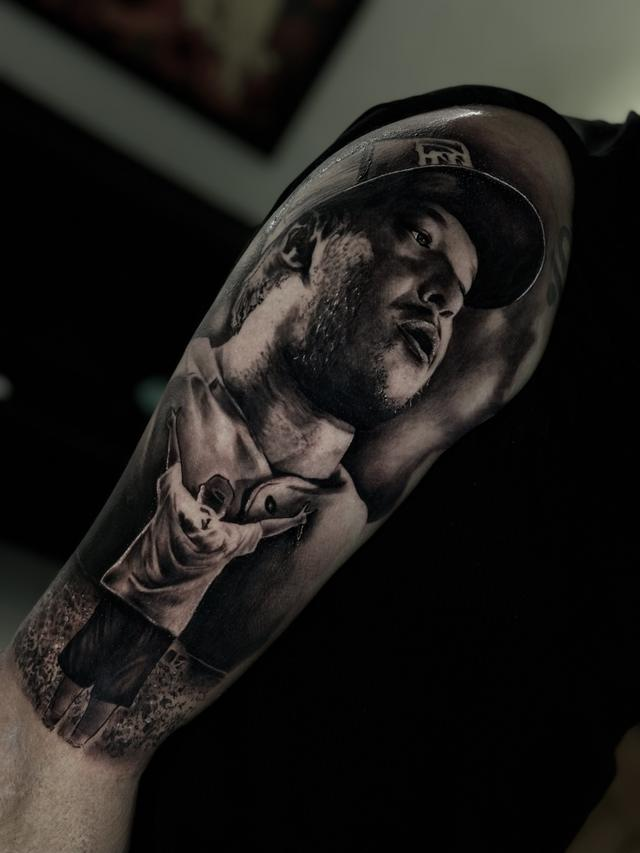
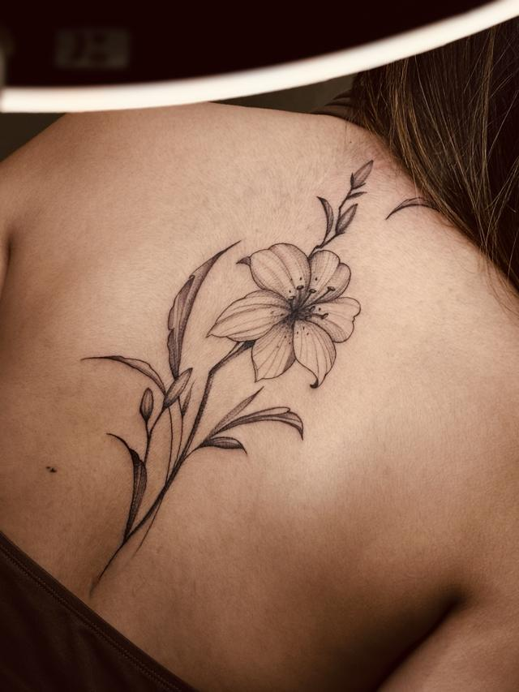
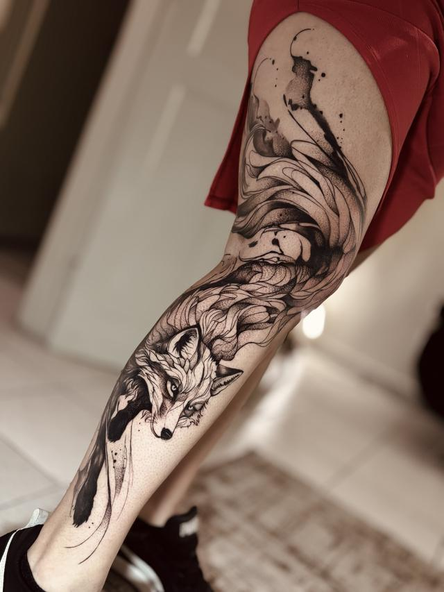
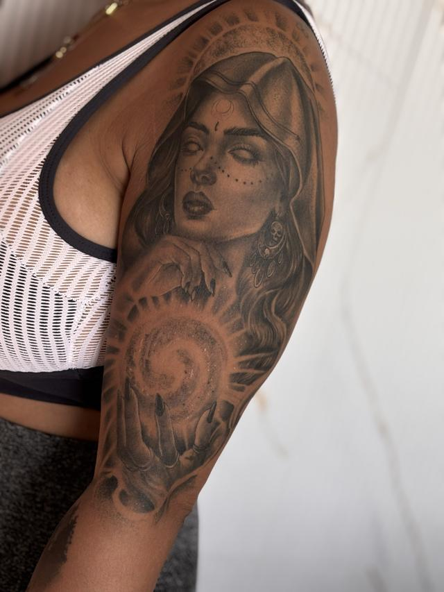
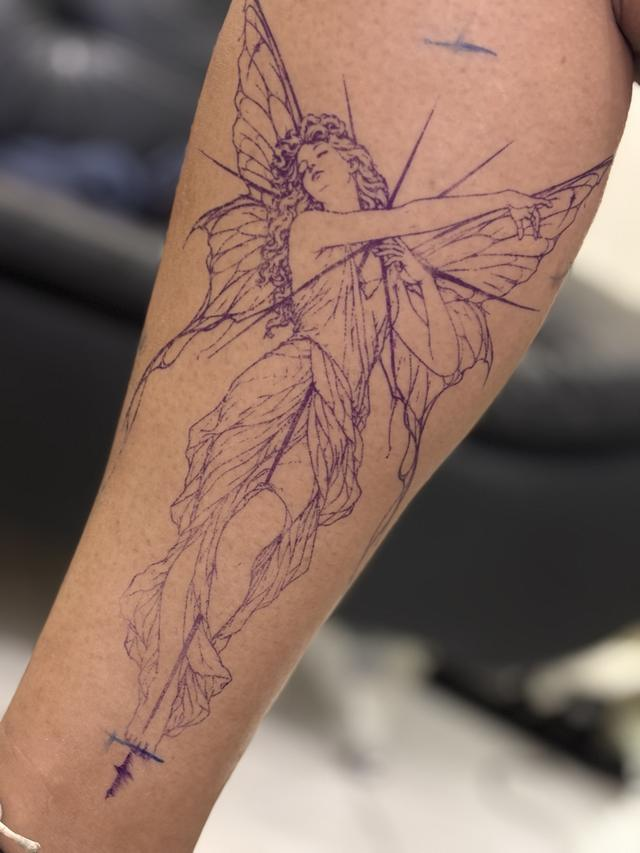
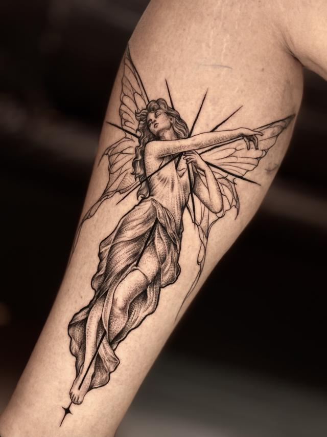
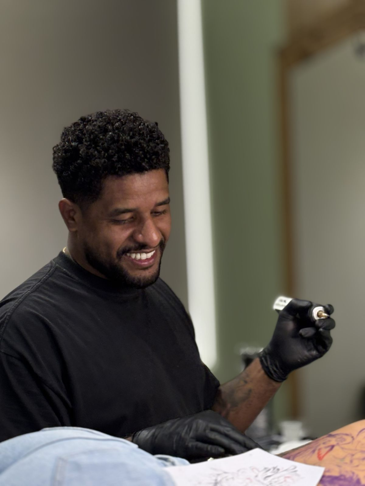

Realismo preto e cinza
A especialidade da casa. Retratos, religioso e animais em camadas de cinza, com preto fechado onde a peça precisa de peso.
- Retrato
- Religioso
- Animais
Estúdio autoral — Vila Matilde, SP
Cada projeto é desenhado para o seu corpo e tatuado em sessão exclusiva. Nada de catálogo: luz, sombra e escala pensadas na sua pele.
01 — Trabalhos em destaque
02 — Estilos
Cada estilo pede uma mão diferente: profundidade de agulha, velocidade e quantidade de preto mudam da primeira à última linha.

A especialidade da casa. Retratos, religioso e animais em camadas de cinza, com preto fechado onde a peça precisa de peso.

Linha fina contínua e sombra construída ponto a ponto. Floral e figuras delicadas que se sustentam pelo traço.

Massas de preto com respiro de pele e manchas controladas. Peças de impacto que funcionam de longe e de perto.

Tatuagem antiga vira base de projeto novo; braço, perna e costas em sessões planejadas, com o mapa da peça inteira antes da primeira linha.
Maori eu não faço — é um estilo de alta dificuldade e prefiro indicar a entregar o aproximado.
03 — Como funciona
Pelo formulário daqui: a ideia, a região do corpo, o tamanho e as referências. Leva dois minutos e evita vinte mensagens depois.
Olho o projeto, vejo o que a região comporta e falo com você pessoalmente. Orçamento não sai por tabela nem por robô.
O sinal reserva o seu dia na agenda e é descontado do valor. Ele não é devolvido em cancelamento ou reagendamento — a data bloqueada não volta a ser vendida.
Faço o desenho em cima do seu corpo. Ajuste é antes, com calma. No dia: material descartável, pausas quando precisar e o estúdio só para você.
Você sai com as orientações. A partir de 40 dias eu avalio por foto ou pessoalmente e, se precisar, combinamos o retoque.
04 — Processo
Stencil aplicado, escala conferida no espelho, só então a agulha. Abaixo, a mesma peça antes e depois da sessão.


Tatuagem boa não é a que impressiona no dia. É a que continua legível dez anos depois.
André — realismo preto e cinza
05 — O artista
Meu trabalho vive do contraste: onde a luz entra, onde a sombra fecha e quanto de pele fica respirando entre as duas. É isso que faz um realismo continuar legível dez anos depois da sessão — e é nisso que gasto a maior parte do tempo antes de encostar a agulha.
Atendo no meu próprio estúdio, na Vila Matilde, com hora marcada e um trabalho grande por dia. Não repito modelo de catálogo e não adapto no improviso o que não cabe na pele: se a sua ideia não funciona do jeito que você pensou, eu falo antes — e proponho o caminho que funciona.
06 — Portfólio
Filtre por estilo e toque para ampliar.
Os trabalhos mais recentes saem primeiro no Instagram @andretatuadoor.
07 — Quem já tatuou
08 — Dúvidas
Depende do tamanho, da região do corpo, do estilo e do tempo de sessão — duas peças do mesmo tamanho podem levar tempos muito diferentes. Por isso não trabalho com tabela: você manda o projeto pelo formulário e eu avalio e passo o valor pessoalmente.
O sinal reserva a sua data e é descontado do valor da tattoo. Ele não é devolvido em cancelamento ou reagendamento: aquele dia sai da agenda e não volta a ser vendido. Combino tudo com você antes de qualquer cobrança.
A partir de 40 dias da sessão, se for necessário, depois de eu avaliar por foto ou pessoalmente. Falha minha na aplicação, retoque sem custo. Área inflamada ou desgastada por cuidado inadequado precisa ser refeita, e aí o trabalho é cobrado de novo — explico isso antes, para não ter susto depois.
Na maioria dos casos, sim. Mande uma foto da peça atual com boa luz no formulário: eu digo o que é possível esconder, se vale clarear antes e quais desenhos funcionam naquele formato. Cobertura exige honestidade — se não for dar bom resultado, eu falo.
O desenho é feito depois do sinal e da data marcada, e você vê antes da sessão. Ajuste faz parte: mexemos no que for preciso antes de aplicar o stencil. O que não fazemos é redesenhar o projeto inteiro na cadeira.
Não. É um estilo de alta dificuldade, com repertório próprio, e prefiro não entregar o aproximado. Se é isso que você quer, posso tentar indicar alguém.
Não atendo menores de 18 anos, com ou sem autorização dos pais. Traga documento com foto no dia da sessão.
Durma bem, coma antes de vir e evite álcool nas 24 horas anteriores. Roupa confortável que dê acesso à região. Sessão longa tem pausa — é só pedir. Pode trazer um acompanhante.
09 — Agendamento
Três passos, dois minutos. Eu recebo tudo organizado e te respondo no WhatsApp.
10 — Estúdio
